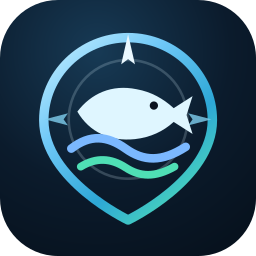

Incoming tide, light offshore wind and sunrise line up for a strong morning bite.
Demo Mode works completely offline after the app files load. Live data requires a web connection and may need the app to be served from localhost/HTTPS rather than opened directly as a file.